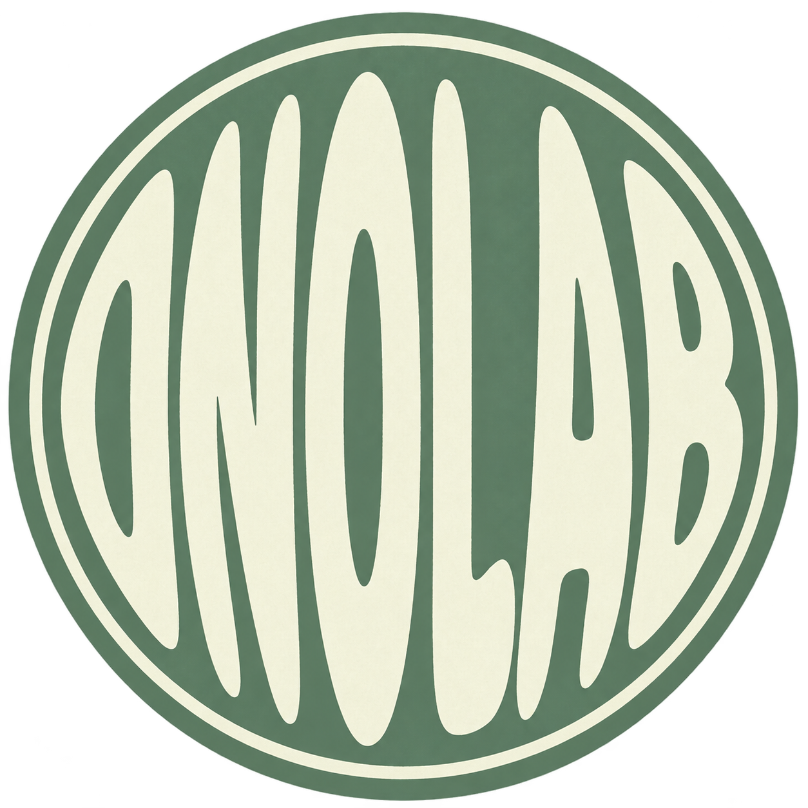

01 / 遊ぶ40 CARDS
PLAY遊んで、覚える。
Sushi Flip Cards
写真を見て、名前を思い出す。
めくって答えを確認する寿司カード。
40枚 · 日本語 / 英語の音声付き

ONOLABJAPANESE LANGUAGE, SOUNDS & CULTURE
A little play.
A new way into Japanese.
音、ことば、食べもの、物語。
気になる入口から、ONOLABをのぞいてみてください。
写真を見て、名前を思い出す。
めくって答えを確認する寿司カード。
40枚 · 日本語 / 英語の音声付き
日本語の104音、オノマトペ、日本の食や観光。
見て、聞いて、楽しめる教材を準備しています。
教材ページは順次公開予定です。
音と言葉の動画、劇団MOCHIの物語。
動画はYouTubeでお楽しみいただけます。
ONOLABのYouTubeチャンネル
YouTubeで観る劇団MOCHIのキャラクターと世界観。
物語の入口を、少しずつつくっていきます。